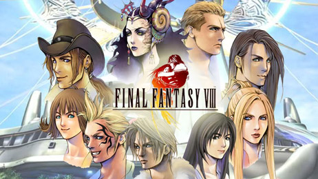
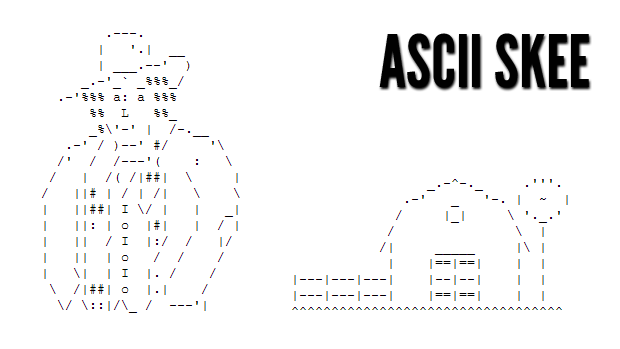

Mix between Tintin, Raj Koothrappali and Garfield
| picture | description |
|---|---|
|  | Final Fantasy VIII(Fainaru Fantajī Eito?) est un jeu vidéo de rôle développé par Square (devenu depuis Square Enix) sous la direction de Yoshinori Kitase et constituant le huitième opus de la série Final Fantasy. Le jeu sort sur PlayStation en 1999 et sur Windows en 2000. Il est également disponible sur le PlayStation Network depuis le 4 février 2010 et par l'entremise de la plate-forme Steam depuis le 5 décembre 2013. Comme son prédécesseur, Final Fantasy VIII s'éloigne des mondes fantastiques traditionnels pour présenter un univers inspiré du monde contemporain. L'histoire met en scène un groupe de jeunes mercenaires, entraînés dans un conflit international, qui cherchent à sauver le monde d'une sorcière manipulant la guerre pour arriver à ses fins. En parallèle, le scénario développe une relation amoureuse entre les deux personnages principaux (représentés sur le logo). Avec plus de 7,8 millions d'unités vendues, Final Fantasy VIII remporte un grand succès commercial, et ce malgré plusieurs critiques vives à l'encontre du système de capacité, jugé trop compliqué. Le titre se différencie de nombreux standards de la série. C'est le premier jeu à utiliser des personnages normalement proportionnés (par opposition au style dit Super Deformed), le premier à utiliser un thème chanté (si on écarte One-Winged Angel de Final Fantasy VII) et un des seuls épisodes à dévier du mode traditionnel d'évolution des personnages. |
|  | Candy Box !Kotaku noted that "Candy Box's curious combination of ASCII 'graphics', role-playing elements and resource management has caught on with hundreds of thousands."[6] According to Mashable, the "charming ASCII art style belies a very deep game that can quickly get addictive".[7] PC Gamer editor Shaun Prescott found the game particularly addictive, describing it as "Cow Clicker as RPG."[5] Justin Davis of IGN stated that, together with A Dark Room and Cookie Clicker, Candy Box has become one of the most well-known incremental games.[8] Rock, Paper, Shotgun named Candy Box number 21 of The 50 Best Free Games on PC in 2016.[9] |